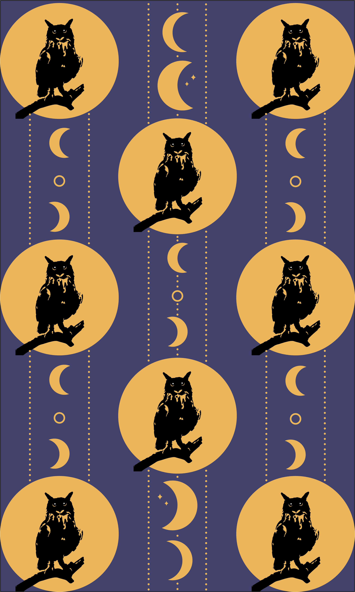
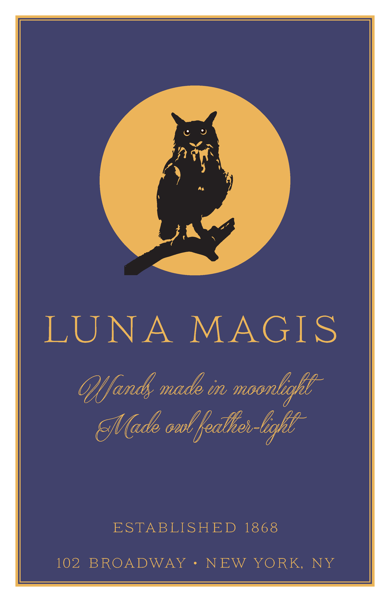
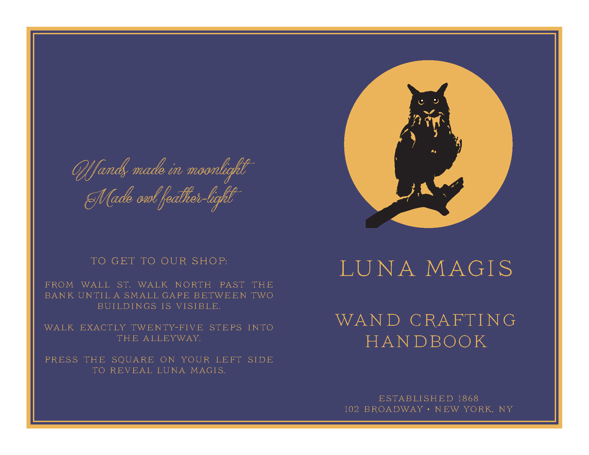
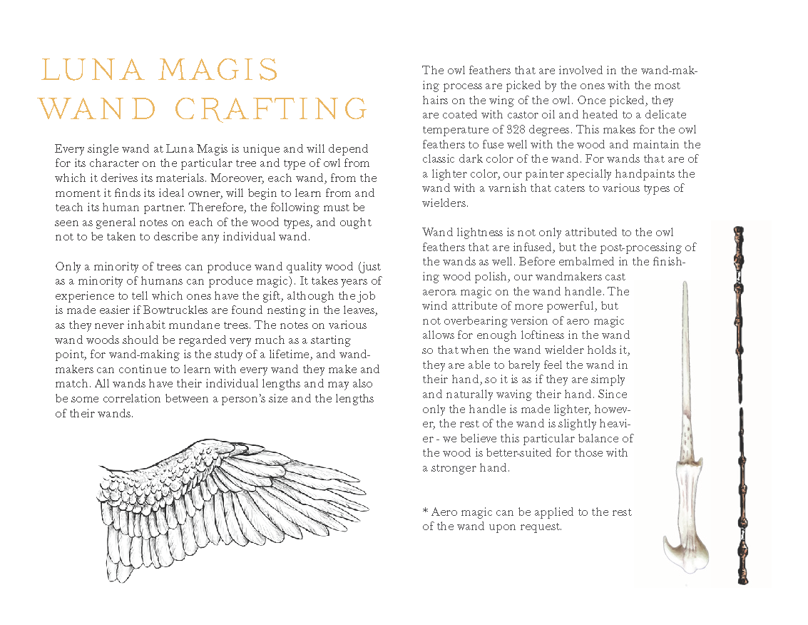

Graphic Design Course Projects
Listed here are some projects I did throughout a Graphic Design & Digital Tools course I took in Fall 2019.
Many of the projects piggybacked off of the concepts and/or objects used in previous projects. In this case,
we repeated the usage of an animal we were assigned to use in our first project, and the animal I was given
was an eagle owl.
Illustrator

This project in Illustrator prompted a design that used the pairing of animal and shape to make a pattern
and no more than 3 different colors. The emphasis was to not make the pattern stand out by color, but by the
objects in the actual design. Having been assigned an eagle owl and a circle, I decided to create a pattern
based off of the silhouette of an owl in front of a light marigold moon. I got the marigold color from the
eyes of the owl, which are a fiery yellow color. I selected the dark purple color since I wanted to emphasize
nightfall, but I didn't want too dark of a color so that it would clash with the black owl silhouette.
I also wanted to incorporate the phases of the moon, but unfortunately there wasn't enough
space on the paper without compromising the visibility of the owl's details to put more phases.
Instead, I did small, vertically mirrored, repeating crescent moons with a circle outline in between
them to give the essence of moon phases, with the middle pattern having two additional waxing and waning
crescents each.
With only the owl-moon and crescent patterns, however, the page still looked like more could be added to it.
Trying out different patterns with a small circle, I eventually settled with doing lines of dots that framed the small
crescents.
Photoshop

Our project assignment was to create a "basilisk" creature by combining the animal used from the Illustrator
project and a newly assigned animal. My assigned combination was the eagle owl and monkey. Using a photo of a monkey
as the basis for the new creature, I photoshopped an owl's head over the monkey's and gave the monkey a feather chest so
that the fur and feathers flowed better. I also added feathers to the arms of the monkey, so that it wasn't only the top
half of the monkey that was altered.
Due to the photo of the monkey not having a tail and using the entire owl's head, it is difficult to tell that the other animal
combined with the owl is in fact a monkey. If I had the chance to alter my basilisk, I would have used only parts of the owl's face
and may have replaced the monkey's hands with claws.

To learn more about the concept of contrast, we were given different background images and animals
to combine in an unnatural way. In other words, insert an animal into a picture in such a way that
they would not normally appear. A picture of Herald Square and a polar bear were two of the images
provided - selecting those and immediately thinking of polar bear endangerment due to climate change,
I decided to Photoshop several polar bears walking the streets of NYC, which is an incredibly unnatural
and abnormal place to find polar bears. I also used the sky of another landscape photo to incorporate into
the Herald Square background to add contrast in color.
InDesign

Our final project in InDesign asked to make a company/brand based off either one of the animals
assigned in the semester or the basilisk creature. Using the owl and thinking of Harry Potter,
I wanted to create a small, old-fashioned wand shop business. Making the poster relatively minimal
and making the image to text ratio similar to a book cover, This is what I came up with.

The outside pages of the booklet reflect the same design as the poster, but on the backside of the booklet,
there are directions on how to get to the hidden wand shop, since I feel like magic shops aren't easily found.

Finally, the inner pages of the booklet describe the wandmaking process, along with diagrams of wands and owl feathers
(which this particular business makes them from). Keeping the background minimal and the text easily readable, I settled
for simple black and white paging.